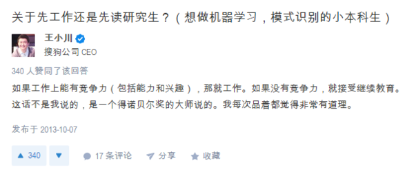
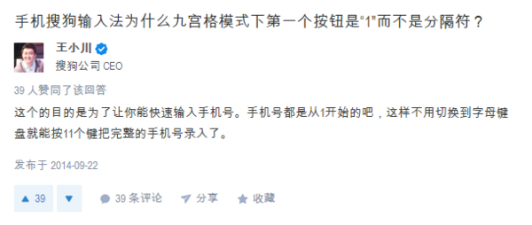

被王小川圈粉是缘于创业真人秀节目《谁是创始人》，我只看了第一集——他们在海底捞当服务员。
这位低调的搜狗老板举着一盘热毛巾一一递给客人，全程保持蜜汁微笑，服务到位又亲和力爆表。不会抢镜头、也不多说话，他的表现和他的伙伴们一致——全情融入了服务员的角色， 而把竞争放在了一边。
可能因为我容易对温和、谦逊的人容易产生好感，尤其当他是一个数千人公司的管理者，能在基础岗位上表现出这种服务意识和亲和力，这种身份的反差和他的快速转换，更加的吸引了我。（当然，他们队伍里的几位大佬——董大姐、张良大哥、任泉和凯叔也都快速的进入了服务员的角色，表现出彩。
后来才得知王小川的“学霸”身份——
1990年，他以成都第一名的成绩考入成都七中数学实验班；
1993年，因获得全国数学联赛一等奖被保送入成都七中高中；
1996年因获得国际奥林匹克信息学竞赛金牌被点招入清华大学计算机系，2000年获得工学学士学位；
2000年，被保送至清华大学计算机系高性能所读研究生，2003年获得工学硕士学位；2010年从清华经管学院EMBA毕业，获得工商管理硕士学位。
所以——中考、高考以及研究生考试都没有参加过，川总你不觉得人生有那么一丢丢缺憾吗？
昨天又看过了王小川参加知识竞技类节目《一站到底》，他连续战胜了6位选手，历史、体育、军事、文学，他都有所涉猎。
尽管最后败北一位年过70岁的睿智老者，川总表示明年要带着搜狗研发的机器人再来挑战。

（我可是一个正经的作者，为什么写到这里感觉“网文小编”的灵魂附体了？？？好想用表情包表达……（雾）
有一种性取向叫做“智性恋”。
这是美国最大相亲网站okcupid的一个关于性取向的定义标签，词性解释为：
adj. 被智识所吸引的，因他人的智识而性奋而痴迷的；
n. 被他人智力所吸引的人。
如果你的性取向正好如此的话——
生于1978年的王小川曾说“搜狗就是我的老婆？”——他现在还是单身
“搜狗不上市，我就不找女朋友！”——传闻搜狗计划在2017年要上市了
最重要的是我已经结婚了，所以你少了一个竞争对手。微笑。（还好我老公也算个小学霸昂哼）
除了智商、情商超群外，川总还在社交网络上以一个普通用户的姿态，卖萌、抖段子、回答疑问、当客服，自由自在的也很可爱：

嗯有道理，我没读研的原因就是我的工作很有竞争力（没考上啊喂）
其实川总你假装是自己悟出来的也没问题啊。
哈哈，阿猫阿狗一家亲呢。

原来是这样，每次我看到不认识的字还得调用手写板，用鼠标划拉……这算是隐藏的彩蛋么？
给这个客服100分！

王老师教你语文课！川总萌萌哒。

原来是这样，可以去小姑娘跟前装13了！

从几个回答来看，川总和马云爸爸一样，思维清晰、犀利直接，有啥说啥，最终川总才能只身赴杭州而顺利获得马云爸爸投资。

川总只回答了题主的前一个问题。“走正道、走直线”——他说自己要“己所不欲勿施于人”，也曾对媒体表示过最欣赏他的老板张朝阳的一点是搜狐在纷繁的互联网竞争中一直都是用正规、正派方式前行。
前进可能会慢一些，但稳稳的进步，总归是最踏实的吧。

啊哈，又过了三年，川总能填这个坑了吧？（其实感觉“先占坑”就是这个问题很好的一个回答。。。
另外他还回答了很多与搜狗、行业、产品还有管理相关的疑问，太长我就不看了：

高双商+正直+温和谦逊幽默+高管+帅又不那么那么帅+纯粹的程序员思维——
所以，快过年了，川总真的不会被催婚吗？
（眨眼
曾经有传言称王小川喜欢的姑娘需要会弹钢琴又懂得量子力学——还好有耿直记者向小川求证了！
川总笑着说：“这个太夸张了。”
他说他希望自己能走出太科学的东西，而在人文艺术上有所追求，如果另一半能有共同审美，是非常好的结果。
广大文科生妹子可以放松、再雀跃一下了。
嗯反正我已经结婚了，我就小小透露下好了——
川总表示自己听过全集的“蒋勋说红楼”音频节目，还专门有邀请过蒋勋来做演讲，所以如果能熟读红楼梦应该是很加分的哦。

其他的，就随缘吧。
不过看到过王小川发表过一篇《我为编程狂》的文章回顾自己的编程学习、实战之路，那种狂热劲儿——感觉他已经跟程序结婚了吧。
希望姑娘们战胜搜狗这个大老婆，加油加油。
- 推荐图文
- 推荐人物
- 推荐企业